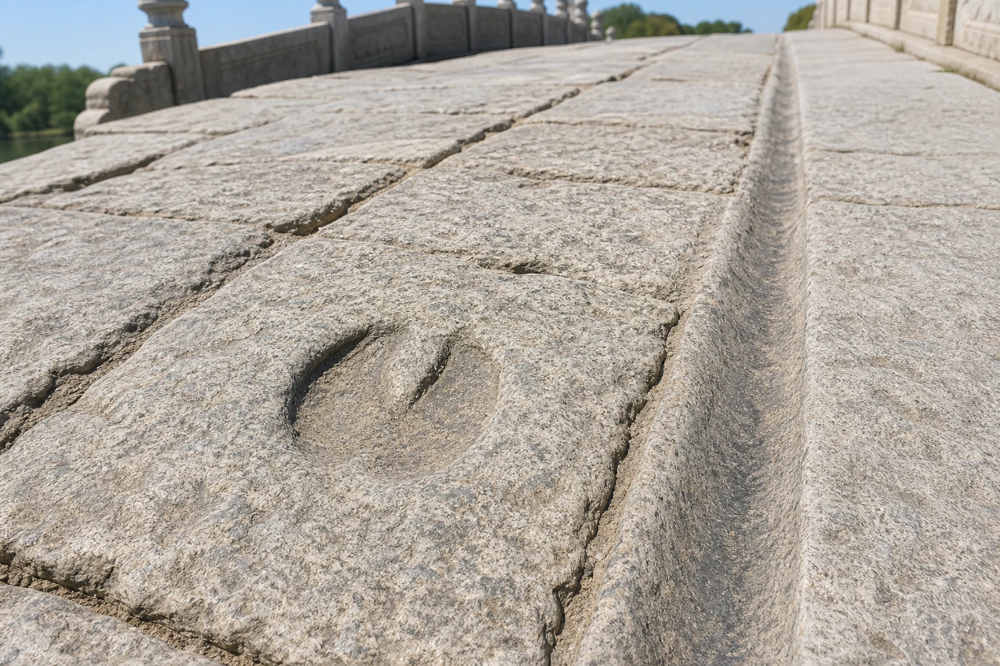
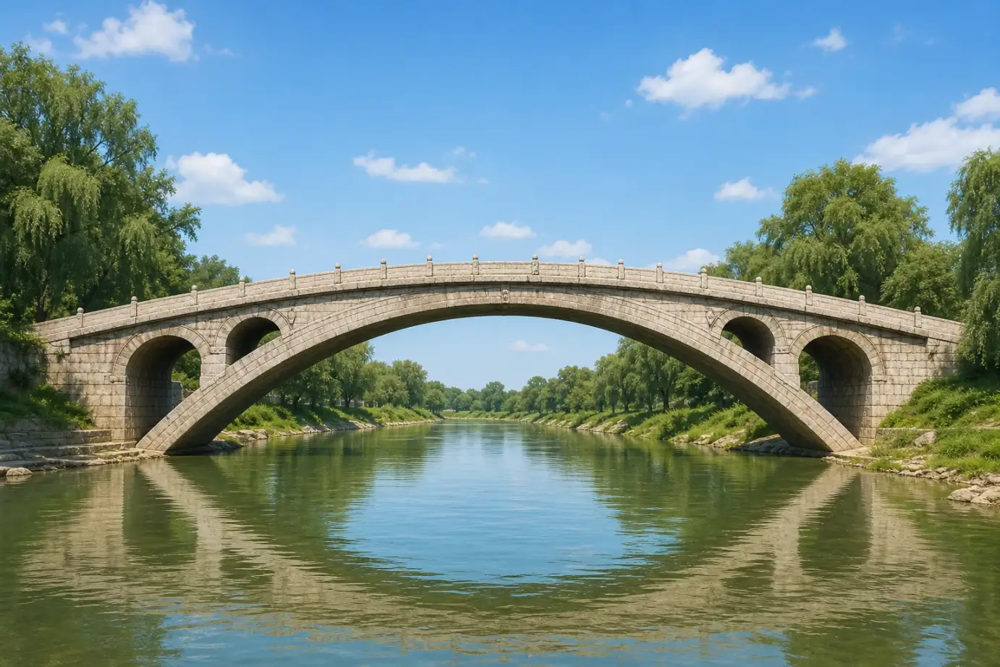

赵州桥和神仙的毛驴
Zhaozhou Bridge and the Immortal's Donkey
Page 1
一头毛驴差点压垮古桥？
Did a Donkey Nearly Crush the Bridge?

In the legend, Zhang Guolao's donkey and Lord Chai's cart left marks on the bridge.
一个流传很广的版本这样开场：
一天，Bā Xiān · 中国道教故事中性格和法宝各不相同的八位仙人。之一的Zhāng Guǒlǎo · 八仙之一，民间故事里常倒骑毛驴。骑着毛驴来到Zhàozhōu Qiáo · 隋代工匠李春主持建造的著名石拱桥。边。毛驴看上去普普通通，背上的行李可不普通——两个袋子里竟然装着太阳和月亮。
就在这时，传说中的贵族Chái Wángyé · 八仙故事中曹国舅在一些民间版本里的旧称。从桥的另一头走来，手里推着一辆小车。小车看起来也不大，里面装的却是一座座大山！毛驴踏上桥面，小车也向前滚去。石桥开始摇晃。Lǔ Bān · 中国传统故事中著名的木匠和工匠祖师。赶紧跳到桥下，用双手托住桥身。桥没有倒。
人们说，桥面上的凹痕就是驴蹄和车轮留下的。Zhàozhōu · 赵州桥所在地过去使用的地名。一带的人一代代讲着这个故事，民间小调《小放牛》也唱到了张果老、柴王爷和鲁班。这里的鲁班就是另一篇故事里那位著名工匠，后来被木匠和建筑工匠尊为祖师爷。
毛驴真的能背着太阳和月亮吗？小车真的装得下一座座大山吗？当然不能。讲故事的人故意把行李说得重得不可能——用普通行李来试这么结实的桥，也太没意思了！
One popular version of the legend begins like this:
One day, Zhāng Guǒlǎo · 张果老 · One of the Eight Immortals, often shown riding a donkey backward., one of the Bā Xiān · 八仙 · A famous group of eight Daoist immortals, each with a different personality and special object., rode his donkey to Zhàozhōu Qiáo · 赵州桥 · The famous Sui stone arch bridge traditionally credited to the builder Li Chun.. The donkey looked ordinary, but its load was not. Inside two bags were the sun and the moon.
Just then, Lord Chai (Chái Wángyé · 柴王爷 · An older folk-story name associated in some versions with Cao Guojiu of the Eight Immortals.), a nobleman in the legend, came from the other side, pushing a small cart. The cart looked small, too, but it carried whole mountains! The donkey stepped onto the bridge. The cart rolled forward. The stones began to shake. Lǔ Bān · 鲁班 · The legendary master carpenter and patron of craftspeople. leaped beneath the arch and pushed up with both hands. The bridge held.
People said that a hoof-shaped dent and a long wheel mark were left on the bridge that day. Families around Zhàozhōu · 赵州 · The historical place name that gave Zhaozhou Bridge its name. told the tale for generations, and it also appears in the folk song Little Cowherd. This Lu Ban is the famous builder from our other story. For centuries, Chinese carpenters and builders have honored him as their great master.
Could a donkey really carry the sun and moon? Could a small cart hold mountains? Of course not. The storytellers made the loads impossibly heavy. A normal load would make a very boring test for a bridge this strong!
Page 2
真正的桥是谁建的？
Who Built the Real Bridge?

The main arch of Zhaozhou Bridge is wide and low, like a gentle rainbow made of stone.
真实的赵州桥大约建成于公元605年，也就是一千四百多年前。那时中国处在Suí Cháo · 581年至618年的朝代，结束长期分裂并为唐朝奠定基础。，这是Táng cháo · 618年至907年的中国朝代。之前一个很短的朝代。古代碑文说，这座桥是隋代工匠Lǐ Chūn · 隋代主持建造赵州桥的工匠。建造的。
我们对李春的生活知道得很少。他没有留下日记，也没有留下完整的图纸。鲁班生活在一千多年以前，不可能亲手建造赵州桥。人们只是喜欢把特别了不起的建筑也放进鲁班的传说里。
这座桥所在的地方过去叫赵州，所以人们叫它赵州桥。它横跨Xiáo Hé · 河北的一条河，赵州桥横跨其上。；“洨河”只是一条河的名字。这条河流过中国北部的河北省。古人把桥形容成云中升起的月亮，也像天空中的彩虹。它的主拱大约三十七米宽，却没有高高鼓成半圆。低而平缓的桥面，让行人、马匹和车更容易通过。
The real Zhaozhou Bridge was completed around the year 605, more than fourteen hundred years ago. China was then ruled by the Suí Cháo · 隋朝 · The short dynasty from 581 to 618 that reunified China before the Tang., a short dynasty just before Tang. An old inscription says that a Sui builder named Lǐ Chūn · 李春 · The Sui-era builder traditionally credited with designing Zhaozhou Bridge. built the bridge.
We know very little about Li Chun's life. He left no diary and no complete set of plans. Lu Ban lived more than a thousand years earlier, so he could not have built Zhaozhou Bridge. People simply liked to add remarkable buildings to the stories told about him.
The area was once called Zhaozhou, which is how Zhaozhou Bridge got its name. It crosses the Xiáo Hé · 洨河 · The river in Hebei crossed by Zhaozhou Bridge.; Xiao River is simply the river's name. The river flows through Hebei Province in northern China. Old writers compared the bridge to a moon rising from clouds or a rainbow in the sky. Its main arch spans about 37 meters, but it does not rise into a tall half circle. The low, gentle roadway made the crossing easier for people, horses, and carts.
Page 3
石头没有胶水，为什么不掉下来？
Why Don't the Stones Fall Down?
修石拱桥时，工匠先在河上搭一个临时木架。木架像一个巨大的模子，托住一块块楔形石头。石头沿着弧线排好以后，工匠再拆掉下面的木架。
这时，每块石头都向下压，也紧紧挤着旁边的石头。压力顺着弧形传到桥的两端，再进入结实的桥台和地面。不是中间某一块神奇石头独自抓住全桥，而是所有石头一起工作。
赵州桥的拱比半圆更平，所以两端会受到很大的向外推力。工匠必须把桥台和地基做得足够结实。它看起来轻轻跨过河面，下面却藏着重量、压力和石头之间的合作。
To build a stone arch, workers first made a temporary wooden frame over the river. The frame acted like a giant mold and held wedge-shaped stones in place. After the stones formed a complete curve, the workers removed the wood below.
Now every stone pushed down and squeezed tightly against its neighbors. The pressure traveled along the curve into the strong supports and ground at both ends. No single magic stone in the middle held the bridge up. All the stones worked together.
Zhaozhou's arch is flatter than a half circle, so it pushes outward strongly at both ends. The builders had to make the end supports and foundations strong enough to resist that force. The bridge seems to float lightly over the river, but its stones are busy pressing and supporting one another.
Page 4
大拱上为什么还有四个小拱？
Why Are There Four Small Arches?
Four smaller arches reduce the bridge's weight and leave more room for water during a flood.
赵州桥的大拱两边，各有两个小拱。它们不只是装饰。要是这些地方全用土石填满，主拱就要一直背着更多重量。打开四个小拱，可以少用一些石料，也让桥身轻一点。
夏秋大雨时，河水可能迅速上涨。水位升到小拱附近时，四个开口还能让更多水流过去，减少洪水直接撞在桥身上的力量。这种设计后来被叫作“敞肩拱”。赵州桥是现存最早的敞肩式石拱桥。
在一千四百多年里，洪水、风雨和来往的车辆都曾让桥受损。后来的人一次次修理它，也更换过一些石头和栏杆。传说让古桥有了神仙和毛驴，聪明的设计和许多代人的照顾让它留到了今天。
Two small arches sit above each end of the great arch—four altogether. They are not just decorations. If those spaces were packed solid with earth and stone, the main arch would always carry more weight. Leaving four openings saved material and made the bridge lighter.
Heavy summer rains could make the river rise quickly. When the water reached the smaller arches, the openings gave some of it more room to pass. They also reduced the amount of solid bridge for the flood to push against. This is called an open-spandrel design. Zhaozhou is the oldest surviving stone bridge known to use it.
During its fourteen hundred years, floods, weather, and traffic have damaged the bridge. Later generations repaired it and replaced some stones and railings. The legend gave the bridge an immortal and a donkey. Clever design and many centuries of care kept it standing.